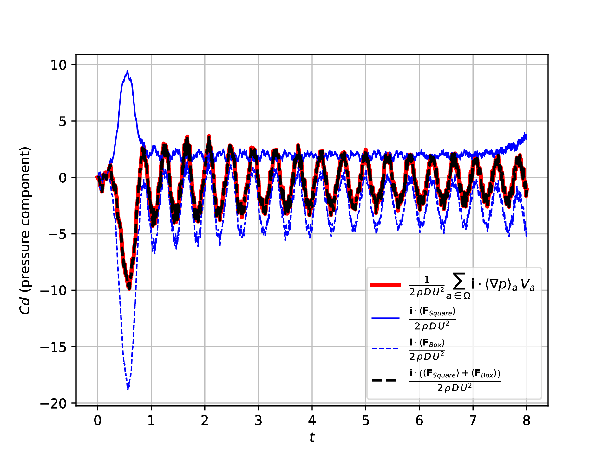

Generalized Boundary Local Coordinates:
Application to the computation of forces in a Boundary Integral SPH formulation
J. L. Cercos-Pita <jlcercos@gmail.com>
F. Macià
J. Calderon-Sanchez
Target 1: Avoid rejection
Local Coordinates
$F(\Omega) = \int_{\Omega} f(\bar{x}) \, dV(\bar{x})$ $\vert \bar{y} - \bar{x} \vert > s \, h, \forall \bar{x} \, \in \partial \Omega \, \rightarrow \, f(\bar{y}) = 0$$F(\Omega) = \int_{\partial \Omega} ...$
OK!
Local Coordinates
$\left \lbrace \begin{array}{l}
F(\Omega) = \int_{\partial \Omega} \int_0^{s \cdot h} f(\bar{y}) \, d\sigma \, dS(\bar{x})\\
\bar{y} = \bar{x} - \bar{n}(\bar{x}) \, \sigma
\end{array} \right.$
$\int_0^{s \cdot h} f(\bar{x} - \bar{n}(\bar{x}) \, \sigma) \, d\sigma \rightarrow$ ☠
$\int_0^{s \cdot h} f(\bar{x} - \bar{n}(\bar{x}) \, \sigma) \, d\sigma \rightarrow$ ☠
ok...
Generalized Local Coordinates
$\begin{array}{l} \displaystyle{ \int_0^{s \cdot h} f(\bar{x} - \bar{n}(\bar{x}) \, \sigma) \, d\sigma \approx } \\ \displaystyle{ \int_{\Omega(\bar{x})} \frac{ f(\bar{y}) W(\bar{y} - \bar{x}; h) }{ \int_{\partial \Omega(\bar{y})} W(\bar{z} - \bar{y}; h) dS(\bar{z}) } \, dV(\bar{y}), } \end{array}$$\bigg( \Omega(\bar{x}) = \mathcal{B}(\bar{x}) \cap \Omega; \partial \Omega(\bar{x}) = \mathcal{B}(\bar{x}) \cap \partial \Omega \bigg)$
I see...
Generalized Local Coordinates
$\begin{array}{l} \displaystyle{ \int_{\Omega} f(\bar{x}) \, dV(\bar{x}) \approx } \\ \displaystyle{ \int_{\partial \Omega} \int_{\Omega(\bar{x})} \frac{ f(\bar{y}) W(\bar{y} - \bar{x}; h) }{ \int_{\partial \Omega(\bar{y})} W(\bar{z} - \bar{y}; h) \, dS(\bar{z}) } \, dV(\bar{y})\,dS(\bar{x}), } \end{array}$3 integrals!!! Are you serious???
This is a complete waste of time!!!
Generalized Local Coordinates
$\begin{array}{l} \displaystyle{ \int_{\Omega} f(\bar{x}) \, dV(\bar{x}) \approx } \\ \displaystyle{ \color{red}{\int_{\partial \Omega}} \color{green}{\int_{\Omega(\bar{x})}} \frac{ f(\bar{y}) W(\bar{y} - \bar{x}; h) }{ \color{yellow}{\int_{\partial \Omega(\bar{y})} W(\bar{z} - \bar{y}; h) \, dS(\bar{z}) }} \, dV(\bar{y})\,dS(\bar{x}), } \end{array}$ 2D vs 3DJust fluid particles close to the boundary
Renormalization factor just for fluid particles close to the boundary
Generalized Local Coordinates
VS.
Forces computation in Boundary Integral formulation
Approach 1:
$\bar{F}_{\Omega \rightarrow \partial \Omega}^{p} = \sum_{i \in \Omega} \langle \nabla p(\bar{r}_i) \rangle \, V_i$✔ Moment conservation
☠ Moment per boundary
Forces computation in Boundary Integral formulation
Approach 2:
$\bar{F}_{\Omega \rightarrow \partial \Omega}^{p} = \sum_{i \in \partial \Omega} \langle p_i \rangle \, \bar{n}_i \, S_i$✔ Moment per boundary
☠ Moment conservation
Forces computation in Boundary Integral formulation
$\begin{array}{lcl} \displaystyle{ \nabla p^{*}_{i} = } & - & \displaystyle{ \frac{1 - \gamma_i}{\gamma_i} \sum_{j \in \Omega_i} \left( p_i + p_j \right) \nabla_{i} W_{ij} \, V_j } \\ & + & \displaystyle{ \frac{1}{\gamma_i} \sum_{j \in \partial \Omega_i} \left( p_i + p_j \right) \bar{n}_j W_{ij} \, S_j. } \end{array}$$ \bar{F}_{\Omega \rightarrow \partial \Omega}^{p} = \sum_{i \in \partial \Omega} S_i \sum_{j \in \Omega_i} \frac{1}{\sum_{k \in \partial \Omega_j} W_{jk} S_k} \nabla p^{*}_{j} \, W_{ij} \, V_j$
✔ Moment per boundary
✔ Moment conservation
Practical application
Practical application
Practical application
Thanks for your attention!